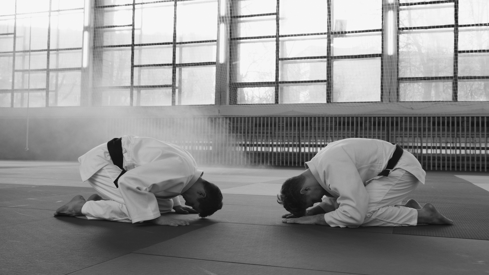

Scroll Down
Martial arts is an ancient form of combat consisting of a variety of methods and techniques for fighting, defending oneself, and attacking. It encompasses physical, mental, and spiritual disciplines that help practitioners develop strength and skill.
Martial arts styles can vary greatly in terms of the weapons or tools used (including fists, feet, and swords), how much contact is involved in a given technique or practice session (contact-based vs non-contact training), the emphasis on forms or self defense scenarios.
Generally speaking, all martial arts style share a common purpose: self-improvement through physical training while incorporating elements of personal discipline

Martial arts originated from various parts of the world and are believed to have been practiced since at least 2,000 BCE in Ancient Greece.
It has evolved over the centuries and many different styles have developed depending on the region or culture in which it was practiced.
The most popular forms of martial arts today come from East Asia, including Japan and China, with other popular forms originating from India, Southeast Asia, Europe and Brazil.
Many people consider Asia to be the centre of the martial arts world as many of the most prominent martial arts such as kung fu, karate and hwa rang originate from the region.

Over the years, martial arts have been shaped by a culmination of factors to include ancient myths and legends to historical revolutions.
Since the beginning of time, different cultures have developed styles of fighting in order to survive, but it is Chinese martial arts that has endured and flourished more than in any other country.

Martial arts evolved with the development of the human physiology and has grown into what we now recognise as martial arts in the modern era.
Below, Beemat takes a look at the history of martial arts and how it has evolved over thousands of years to become what it is today.
